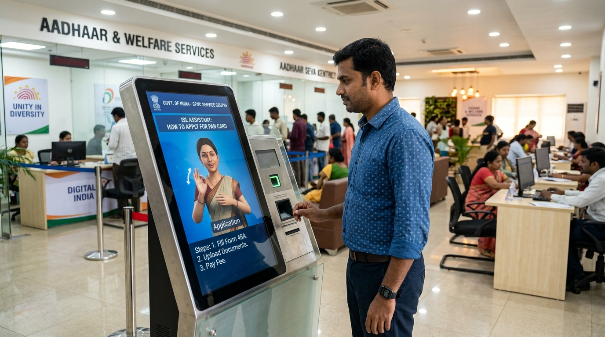

ISL Accessibility for Government Services
Make every public service accessible to India's 68 million deaf citizens — from Aadhaar enrollment and passport seva to civic welfare paperwork and municipal terminals.

Use Cases
Aadhaar & Identity Services
Deaf citizens navigate biometric enrolment and verification with ISL guidance.
Passport & Visa Offices
Document submission, appointment booking, and status updates in ISL.
Municipal Services
Birth certificates, property tax, water/electricity services - all accessible.
Public Announcements
Emergency alerts, government schemes, and public health campaigns in ISL.
Court Proceedings
Legal proceedings and judicial services accessible without an interpreter.
RTI & Grievance Portals
Right to Information and grievance filing made accessible for deaf citizens.
Deployment Options
🖥 Self-Service Kiosk
Standalone ISL kiosks at service centres - citizens interact via touchscreen with ISL avatar guidance.
💻 Counter Display
Tablet or monitor at the counter - officer types, avatar signs the translation for the deaf citizen.
📺 Display Board
Public announcement boards with ISL avatar - queuing systems, wait times, and alerts.
🌐 Portal Integration
One-line widget integration on government portals like DigiLocker, UMANG, or any state portal.